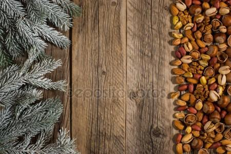

ALMA@ZEN Tienda N@tural nace en la ciudad de San Vicente en el año 2018 con un pequeño local a la calle, luego de un tiempo trabajando bajo esa modalidad decidimos cerrar el local y actualmente teniendo en cuenta la situación post-pandemia nos encontramos trabajando de manera virtual, con esta tienda On-Line donde somos una opción más cómoda y segura para nuestros clientes, donde ellos pueden realizar sus pedidos a través de este sitio web. Aquí podrán encontrar varios productos ricos, saludables y naturales. A través de nuestros productos trabajamos buscando el bienestar de la gente.
